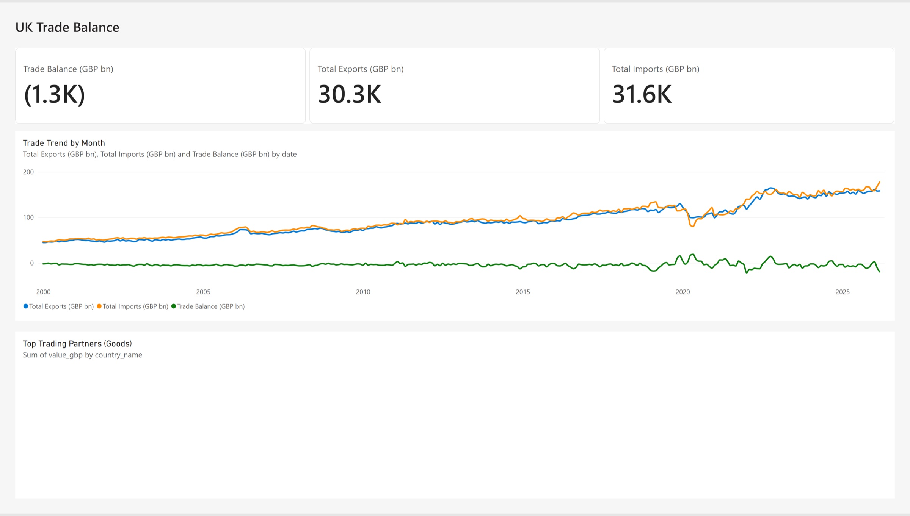
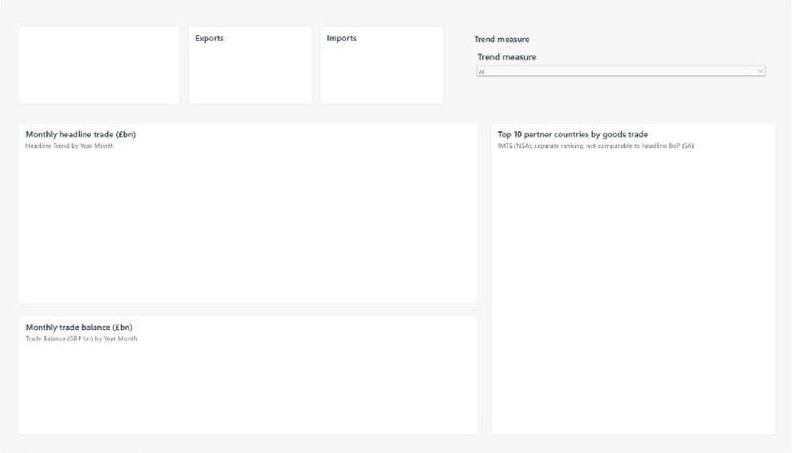
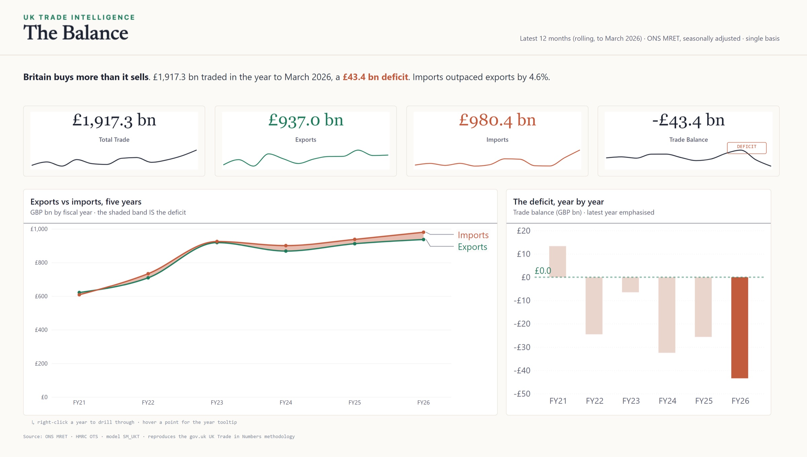
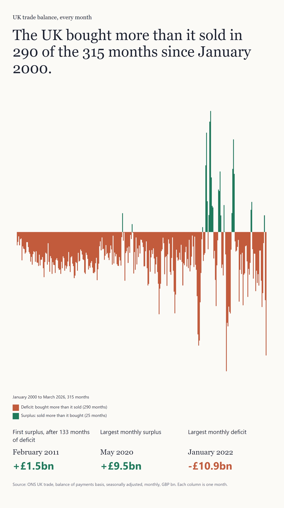
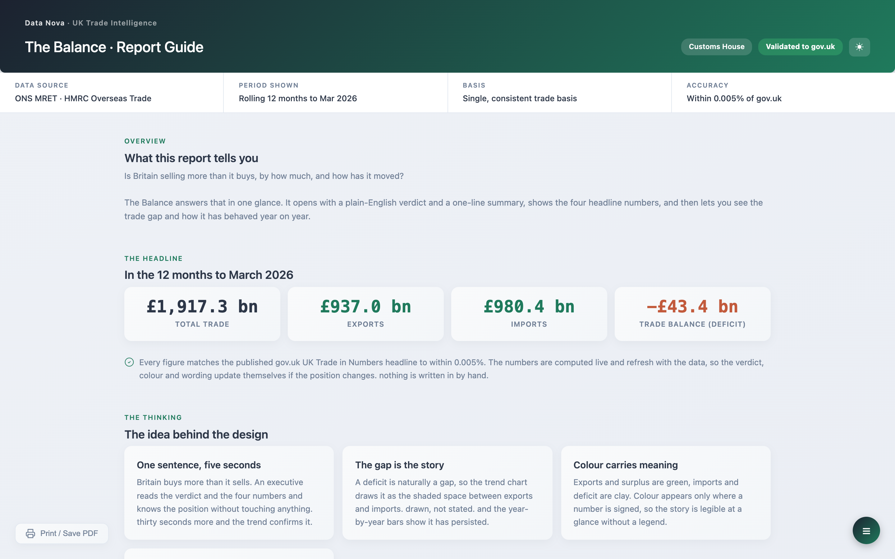

Agentic BI Development
Prathy Kamasani · Data Nova · Data Alchemy
01 / 53
60 minutes. Who I am, the agenda, then concepts, then the trade balance report built three ways. The refrain for the hour: what would you have to check?
About me
Prathy Kamasani
Solopreneur @ Data Nova, specialising in Microsoft Fabric and Power BI
Microsoft MVP
London Microsoft Fabric User Group organiser
Blogger, speaker and budding YouTuber
Remote first, lives in the UK and the Netherlands
data-nova.io
linkedin.com/in/prathy
Prathy Kamasani · Data Nova · Data Alchemy
02 / 53
Hello everyone. I am Prathy Kamasani: a solopreneur at Data Nova, specialising in Microsoft Fabric and Power BI. Microsoft MVP, I organise the London Microsoft Fabric User Group, I blog, I speak, and I am a budding YouTuber. Remote first, living in the UK and the Netherlands. Everything else is on LinkedIn and my website.This session
Agentic BI Development
Letting AI agents build your Fabric semantic models and reports
An AI agent can build a real semantic model and report from a written spec, if you know how to brief it and how to check its work.
The interesting part is not the prompt. It is a spec it can act on without guessing, a quality bar set before it starts, and a proper review of what it built.
Prathy Kamasani · Data Nova · Data Alchemy
03 / 53
The title again, and what the hour covers. From the abstract: an agent building a real semantic model and report from a written spec, and the parts that make it reliable. Everyone should leave knowing what to check before they trust an agent's work, and where it still needs a person.Hands up
Who uses AI for anything: recipes, holiday plans, emails?
Prathy Kamasani · Data Nova · Data Alchemy
04 / 53
Old-fashioned show of hands. First: who uses AI for anything at all, recipes, holiday prep, emails? Most hands go up.Hands up
Who uses AI for anything: recipes, holiday plans, emails?
Who uses it for BI work?
Prathy Kamasani · Data Nova · Data Alchemy
05 / 53
Then: who uses it in their BI work? Fewer hands. Use the gap between the two to set up the session: today is about closing it.Agenda
01
What is BI development?
Six steps from a question to a trusted report
02
Working with AI
Context, skills, rules, algorithms, loops, hooks, gates
03
Agent roles
Operator, builder, orchestrator, and you
04
Building the trade balance report
Chat, Fabric skills, MCP, my own, full delegation
05
How I built the tool
Specs, engine, tests, prompts, deliverables
06
Cost and limits
Time, tokens, and what still needs a person
Prathy Kamasani · Data Nova · Data Alchemy
06 / 53
Four parts so far. What BI development is. Working with AI: the building blocks you use to tell it how you work. The roles an agent plays, and where you stay in the loop. Then one brief, worked through chat, Fabric skills, MCP, my own setup, and full delegation.01
What is BI development?
Six steps, and most of the time is not in the visuals.
Prathy Kamasani · Data Nova · Data Alchemy
07 / 53
Set up the lifecycle before talking about agents. Most delivery time is not building the visual: it is requirements, model fixes, testing, rework after feedback, and sign-off. [Add your own example of where the hours really go.]01 · BI development
From a question to a trusted report
01
Discovery
Users, questions, acceptance criteria
02
Design
Layout, sketch, mockup
03
Build
Model changes, pages, visuals, theme
04
Test
Numbers, render, interaction
05
Deploy
Workspace, binding, refresh
06
Govern
Sign-off, audit trail, changes
Prathy Kamasani · Data Nova · Data Alchemy
08 / 53
Every BI report goes through these six steps, with or without an agent. Discovery: who it is for, what they decide with it, how we will know it is right. Design: the layout and the mockup, signed before anything is built. Build: the model changes and the pages. Test: the numbers, the render, the interactions. Deploy: the right workspace, the right model, survives a refresh. Govern: sign-off, who approved what, changes after go-live. Ask who does each one today. Then flag Discovery, Test and Govern: they are where trust is earned, and where agents are weakest. Most of the time is not in Build.02
Working with AI
A capable graduate on day one
Prathy Kamasani · Data Nova · Data Alchemy
09 / 53
So that is the job: discovery, design, build, test, deploy and govern. An AI agent can now help with every one of those steps. Before we hand it any of them, it is worth thinking about what kind of colleague we are handing them to.02 · Working with AI
Treat it like a new graduate
Knows a lot
DAX, Power BI, Fabric, public documentation
Not how you work
Your model, your names, your rules, your sign-offs
So you give it
Context, recipes, limits, and someone who checks
Prathy Kamasani · Data Nova · Data Alchemy
10 / 53
Think of a new graduate on day one. They know a lot: DAX, Power BI, Fabric, the public documentation. What they do not know is how you work: your model, your naming, your rules, who signs off what. You would not let a graduate run discovery or sign off a deploy on day one. You tell them how you work, give them recipes, set limits, and check their work. An agent is the same. First, what most of us do today: plain chat, with no context at all.02 · Working with AI
Plain chat
Setup
Claude Code, no skills, no access to the model
Pro
Zero setup, fast for DAX
Con
Guesses table and column names
Prathy Kamasani · Data Nova · Data Alchemy
11 / 53
One clip, 81 seconds, highlights marked. First: asking what is preinstalled; no skills are configured. Then the first prompt asks for a trade balance measure and a card colour measure with no model; it invents 'Trade'[Exports] and 'Trade'[Imports] (first box). The second prompt pastes the real tables, columns and relationships, and it rewrites both measures correctly (second box). For a single measure this is genuinely the right tool. The catch: I had to paste the schema by hand, and it goes stale when the model changes. Press P to play or pause.02 · Working with AI
Without the schema, then with it
Prompt 1: no model
Trade Balance =
SUM('Trade'[Exports]) - SUM('Trade'[Imports])Prompt 2: real names pasted in
Trade Balance =
VAR Exports =
CALCULATE(
SUM('Trade Total Monthly'[Value GBP Millions]),
Flow[Direction] = "Export"
)
VAR Imports =
CALCULATE(
SUM('Trade Total Monthly'[Value GBP Millions]),
Flow[Direction] = "Import"
)
RETURN
Exports - ImportsPrathy Kamasani · Data Nova · Data Alchemy
12 / 53
Left: prompt 1, the ask on its own. The highlighted names, 'Trade'[Exports] and 'Trade'[Imports], do not exist in the model: it invented them. Right: prompt 2, after pasting the real tables and columns. It now sums Value GBP Millions and splits exports from imports on Flow[Direction]. Only the Trade Balance measure is shown. The Balance Card Colour measure came out the same both times (IF the balance is 0 or more, "#2E7D32", else "#C62828"), because it does not depend on any names. The fix worked, but I had to paste the schema by hand, and it goes stale the moment the model changes. Note: the Flow[Direction] values (Export, Import) in the right-hand answer are the chat's assumption, not checked against the data. Code is shown as pasted, with the indentation in the right-hand answer tidied to fit.02 · Plain chat
What it changed
No report
Chat writes DAX as text. You paste it into the model and build the report yourself.
The model
0
changes
It cannot reach the model
The report
None. Two measures as text, to paste in by hand.
Prathy Kamasani · Data Nova · Data Alchemy
13 / 53
What chat changed: nothing. It has no access to the model, so it cannot add a measure or build a page. What you get is DAX as text, and you do the rest by hand.02 · Working with AI
How chat differs from an agent
Chat: once through
You ask
A measure for the balance
It answers
From what it has seen before
You paste it in
And find out if it works
Agent: a loop
Plan
Which table holds exports?
Act with tools
Reads the model, runs a DAX query
Observe the result
Compares the figure with the source
Try again, or stop
Fixes and reruns, or hands back
You approve before it ships
Chat answers once. An agent checks its own work, and you check the agent.
Prathy Kamasani · Data Nova · Data Alchemy
14 / 53
That was chat. Under the hood an agent is the same kind of model, an LLM; what makes it an agent is the tools and the loop. Chat goes through once: you ask, it answers from what it has seen before, you paste it in and find out. In the clip, that is where the invented table names came from. An agent goes round a loop: it plans, acts with tools, reads the real model and runs a DAX query, observes the result against the source, and tries again or stops. It does by itself what I had to do by hand in the video. That loop is the power and the risk: it can fix its own errors, and it can confidently build on its own mistake. So the loop needs a gate, and the gate is you.02 · Working with AI
The building blocks
Context
Skills
Rules
Algorithms
Loops
Hooks
Gates
MCP
Prathy Kamasani · Data Nova · Data Alchemy
15 / 53
Eight building blocks. Most people know two or three of them: context, skills, rules, algorithms, loops, hooks, gates, MCP. On the next slide they line up into a table, and over two slides we add what kind each one is, then what it does.02 · Working with AI
Advisory, structure or blocking
| Block | Kind | What it does |
|---|---|---|
| Context | Advisory | Standing rules for every session |
| Skills | Advisory | A repeatable recipe for one job |
| Rules | Advisory | What good looks like, in words |
| Algorithms | Structure | The steps of each phase |
| Loops | Blocking | Repeat until a check passes |
| Hooks | Blocking | Refuse one action, on an event |
| Gates | Blocking | No sign-off, no next phase |
| MCP | Reach | Live access to tools and data |
Prathy Kamasani · Data Nova · Data Alchemy
16 / 53
Now the kind. Context, skills and rules are advisory: the agent can skip them. Algorithms give the work its structure. Loops, hooks and gates are blocking: the agent cannot walk past them. MCP is reach: it gives the agent live access, and on its own it neither advises nor blocks.02 · Working with AI
What each one does
| Block | Kind | What it does |
|---|---|---|
| Context | Advisory | Standing rules for every session |
| Skills | Advisory | A repeatable recipe for one job |
| Rules | Advisory | What good looks like, in words |
| Algorithms | Structure | The steps of each phase |
| Loops | Blocking | Repeat until a check passes |
| Hooks | Blocking | Refuse one action, on an event |
| Gates | Blocking | No sign-off, no next phase |
| MCP | Reach | Live access to tools and data |
Prathy Kamasani · Data Nova · Data Alchemy
17 / 53
Context: standing rules, read every session; CLAUDE.md for Claude, AGENTS.md for any tool, copilot-instructions.md for GitHub Copilot. Skills: a repeatable recipe for one job, public like Microsoft's Fabric skills or your own. Rules: what good looks like, written down. Algorithms: the steps of each phase, some in parallel. Loops: repeat until a check passes, not until the agent feels done. Hooks: refuse one action when an event fires. Gates: no sign-off, no next phase. MCP: live, typed access to a tool or data. Where each lives in my setup comes later, when we open it.02 · Working with AI
Advisory, hook or gate?
Advisory
Context, skills, rules
The agent decides whether to follow them. Nothing fails if it does not.
Hook
Fires on an event
A commit or an edit. It refuses that one action.
Example
An edit to the engine from a report branch
Gate
A checkpoint in the flow
No evidence or signature, no next phase.
Example
No signed design, no build
The prompt said not to edit the engine, and it did. Now a hook refuses the edit.
Prathy Kamasani · Data Nova · Data Alchemy
18 / 53
Context, skills and rules are advisory: the agent can skip them on any run. A hook fires on an event, a commit or an edit, and refuses that one action. A gate is a checkpoint in the flow: the next phase will not start without evidence or a signature. The story at the bottom is real: in a delegated run the prompt said never edit the engine, and the agent edited it anyway. The fix was not a stronger prompt. It was a hook that refuses an engine edit from a report branch. Every example later sits somewhere between advisory and blocking.02 · Working with AI
An algorithm for each phase
01
Discovery
13
steps
Requirements, stories, feasibility, profile, proof points
Discovery gate
02
Design
15
steps
Contract, layout, sketch, visuals, mockup
Design gate
03
Develop
2
steps
Build, offline gates
04
Verify and QA
6
steps
Canary, live render, render review, QA
QA gate
05
Ship
5
steps
Ship approval, client deploy, deliverable pack
Ship approval
06
Govern
3
steps
Audit trail, tidy, owner acceptance
Owner acceptance
Prathy Kamasani · Data Nova · Data Alchemy
19 / 53
This is the rail: 44 steps across six phases, each phase written down as an algorithm the agent follows in order. Some steps run in parallel: while one model reads a draft and decides, the agent prepares the next draft; a decision and its second check run side by side. Five steps are gates, named at the bottom of each card: the phase does not finish until its gate is decided. Show the rail live in Mission Control if there is time.03
Agent roles
Operator, builder, orchestrator, and you
Prathy Kamasani · Data Nova · Data Alchemy
20 / 53
Who does what once the building blocks are in place. Four roles; the same model can play more than one, but never at the same time.03 · Agent roles
Four roles
Operator
Runs the tool on a brief
Writes only the deliverables. Logs what the tool cannot do.
Builder
Changes the tool
On its own branch, with tests. You review each change.
Orchestrator
Plans and hands out work
Sends each decision to a delegate and a checker, in order.
Human gate
Signs the gates
Decides what may be delegated. Keeps the client deploy.
Prathy Kamasani · Data Nova · Data Alchemy
21 / 53
Operator: runs the tool on a brief and writes only the deliverables; when the tool cannot do something it logs a gap and uses the nearest supported option. Builder: changes the tool itself, on its own branch, with tests; every change is a pull request I review. Orchestrator: plans the work and hands each decision to a delegate and a second checker, in the order the rail requires. The human gate: decides what may be delegated, signs what matters, and keeps the one thing I never delegate, the client deploy. In the last run, the operator logged ten gaps and ten builders fixed them while it carried on.03 · Agent roles
Who does what, step by step
| Step | The agent | You |
|---|---|---|
| Discovery | Drafts user stories from the requirements | Sign off the requirements |
| Design | Profiles the model, drafts the layout and mockup | Sign the design before it builds |
| Build | Writes the model changes and the report files | Approve the model changes |
| Test | Runs data, render and layout checks | Drive the interactions |
| Deploy | Deploys through a gated pipeline | Approve the release |
| Govern | Records who approved what, and when | Accept the result |
Prathy Kamasani · Data Nova · Data Alchemy
22 / 53
The same six steps from the start of the talk, split by who does the work. The agent drafts the stories, profiles the model and drafts the layout, writes the model changes and the report, runs the checks, deploys and records. You sign off the requirements, sign the design before it builds, approve the model changes, drive the interactions, approve the release, and accept the result. Every line in both columns is a step my own setup has today; the demos later show it.03 · Agent roles
How a report gets made
Requirement
YouDrafts and improves it
OperatorApprove or question
GateBuilds and checks
OperatorCanary deploy
OperatorClient deploy
YouA question sends it back to the operator
Alongside
Tool cannot do it
OperatorGap logged
OperatorFix on a branch
BuilderReview the change
YouPrathy Kamasani · Data Nova · Data Alchemy
23 / 53
Read it left to right. I write the requirement. The operator drafts it properly: stories, acceptance tests, the data it needs. At the gate it is approved or questioned; a question sends it back to the operator, and that loop runs until it is approved. The same loop repeats at every gate: design, QA, ship. The operator builds, checks and deploys to a canary. The client deploy stays with me. Underneath, the second lane: whenever the tool cannot do something, the operator logs a gap and carries on, and a builder fixes it separately as a change I review.03 · Agent roles
Who signs the gates?
Human gate
You sign every gate
Discovery, design, QA, ship and acceptance. Slow, and you are always in the loop.
Prathy Kamasani · Data Nova · Data Alchemy
24 / 53
Two ways to run the same flow. First, the human gate: I sign every gate myself, discovery, design, QA, ship and acceptance. Safe, but I am in the loop all day.03 · Agent roles
Who signs the gates?
Human gate
You sign every gate
Discovery, design, QA, ship and acceptance. Slow, and you are always in the loop.
Full delegation
A second model decides, a third checks
You keep one gate: the deploy to the client. You read the decisions afterwards.
Prathy Kamasani · Data Nova · Data Alchemy
25 / 53
The other way: full delegation. A different model decides each gate and a third model checks it, and I keep one gate, the client deploy, and read the recorded decisions afterwards. Be honest here: in my first delegated runs the deciding model was meant to be different but was quietly served the drafting model; only the checks were independent. The tool now proves which model answered and refuses a decision when it is the drafter's own. That is the last example in the next section.04
Building the trade balance report
Same requirement every time, so the comparison is fair.
Prathy Kamasani · Data Nova · Data Alchemy
26 / 53
For each example use the same four beats: setup, brief in, what came out, what we had to check. Do not declare a winner until the comparison slide.04 · Examples
UK trade, the balance
The same brief, pasted unchanged into each tool
What to build
Balance card
Changes colour from surplus to deficit
Monthly trend
Exports, imports and the balance
Breakdown
By partner country or commodity
Slicer
Switches the trend between measures
Also in the brief
Who it is forThe model, its tables and its rulesOne page, theme colours, native visualsWhat is out of scopeWhat to hand back, with evidenceAsk before guessing
Done means
£937.0bn
exports
£980.4bn
imports
12 months to March 2026, published figures
Card colour from a measure, not a fixed colour
The slicer changes the plotted measure
Every field it uses exists in the model
Prathy Kamasani · Data Nova · Data Alchemy
27 / 53
Every tool in this section gets the same brief, pasted unchanged. The full text is in demos/BRIEF.md. It follows Anthropic's own guidance for briefing an agent: who it is for and why, the exact model and tables, what to build, what done means, the constraints, what is out of scope, what to hand back, and to ask before guessing. The things that went wrong in earlier runs are stated openly as checks: the card colour must come from a measure so it flips after a refresh, the slicer must change the plotted measure, and every field must exist in the model. The figures are the published gov.uk UK Trade in Numbers totals for the 12 months to March 2026. Open ONS data, so nothing confidential.04 · Example 2
Fabric skills
Setup
Microsoft's Fabric skills, same brief
Pro
Real file formats, a draft in minutes
Con
Opt-in, no record of who approved
Prathy Kamasani · Data Nova · Data Alchemy
28 / 53
Concede loudly: Microsoft's skills are good, and for a prototype, a single measure, or a report you will never rebuild, they are the right answer. Watch for: real file formats, and a first draft far sooner than you could build one. What to notice is not quality but that it is advisory and opt-in. Show the version and date of the setup. One recording of the whole run, played at 12 times speed (24 minutes becomes about 2): it asks what skills are installed, reads the brief, finds the model, queries it, writes a spec you approve, builds the report files, validates them, previews in the Service, and publishes to the Fabric Friday Demo workspace folder 02 Fabric skills. Result against the brief: one of four done checks passed. Step by step is in demos/02-fabric-skills/run-steps.md. Press P to play or pause; the video controls also set speed.04 · Example 2: Fabric skills
What it changed

The model
0
changes
It read the model with DAX queries and wrote nothing
The report
UK Trade Balance, published to folder 02. One of four done checks: the totals cover all years, the partners chart is empty, no card colour, no slicer.
Prathy Kamasani · Data Nova · Data Alchemy
29 / 53
The model is untouched: it read it with DAX queries and used the measures that were there. The report is a real Power BI report in the workspace, built in minutes, and you can see what went wrong: the cards show all-years totals, 30.3K and 31.6K instead of 937.0 and 980.4, the partners chart is empty, the card colour and the slicer were not built. One of the four done checks passed.04 · Example 3
MCP
Setup
GitHub Copilot in VS Code, with Microsoft's Power BI authoring MCP
Pro
Reads the real model
Con
Can write to it, no approval step
Prathy Kamasani · Data Nova · Data Alchemy
30 / 53
VS Code, GitHub Copilot in agent mode, Microsoft's hosted Power BI authoring MCP server (signed in with an az token). The clip is a slow scroll through the whole chat (1 minute 54 seconds, about 3 lines a second). What happens: it connects to SM_UKT_Import through MCP, runs DAX queries and gets the 12-month figures right (exports 936.967, imports 980.369, balance -43.402 GBP bn). It found the connection read-only, so it could not add a field parameter and asked how to handle the slicer. The MCP server cannot create report pages, so Copilot wrote the report as PBIP files itself, locally. It could not publish them: by its own account, the MCP tools cannot create or publish reports, and the Fabric import menu does not take PBIP. The item UK Trade Balance mcp in the Fabric Friday Demo folder 03 MCP is a Save a copy of the report already in the workspace (the Fabric skills one), made in the browser, not the report Copilot built. Point to make: MCP gave it the real model and the right numbers; it could not deliver a report. Press P to play or pause.04 · Example 3: MCP
What it changed
No report
PBIP files on the laptop. Nothing reached the workspace.
The model
0
changes
Read only: it could not add the field parameter the slicer needs
The report
None published. Copilot wrote PBIP files on the laptop; the MCP tools cannot create or publish a report.
Prathy Kamasani · Data Nova · Data Alchemy
31 / 53
MCP got the real numbers from the live model, but it changed nothing: the connection was read only, so the field parameter for the slicer could not be added. And there is no report in the workspace: Copilot wrote PBIP files locally, and the MCP tools cannot publish them. Say it clearly: with a writable connection, MCP can change the model directly, and nothing asks you first. This run's connection was read only.04 · Example 3: MCP
Publishing the MCP report

As built
The Service refused it
Microsoft's validator, 5 errors:
No
.platform fileNo schema line in the
.pbipCard colours set as theme colours, not hex (2)
A setting
report.json does not allowAfter one fix
I removed the setting by hand and it published. Every visual is empty, with or without filters.
Prathy Kamasani · Data Nova · Data Alchemy
32 / 53
What happened when I published the files Copilot wrote. As built, the Power BI Service refused them: report.json has a setting, layoutOptimization, that the report format does not allow. Microsoft's own validator finds five errors: no .platform file, no schema line in the .pbip, the balance card's colour rule uses theme colours where the format needs hex values, twice, and that setting. I removed the one setting by hand, on a copy, and the Service accepted it. It is in folder 03 as UK Trade Balance (MCP build). Every visual on it is empty, with or without filters, and it never finishes loading. Copilot's own notes said it could not open the report anywhere to check it: there is no Power BI Desktop on a Mac. So the numbers it got from MCP were right, and the report it wrote does not work.04 · Example 4
Fabric skills + your own
Live demo
Two steps in the terminal. A check stops a report whose design was not approved. Then one command builds the report and runs all the checks.
Setup
My skills, scripts, gates, and sign-offs
Pro
Tested, gated, with an audit trail
Con
Upfront cost, covers only what I encoded
Prathy Kamasani · Data Nova · Data Alchemy
33 / 53
Back to the terminal, tab 1. Demos A and C run live and offline. Demo A: check_phase_order blocks what-we-trade and passes the-balance. Demo C: run_pipeline until gates, five stages green, advisories, read R-SURVIVES-REFRESH aloud. Demo B (recorded, optional): the model half, same recipe. Say the cost out loud: it is overkill for one-off work. Where its grounding comes from: it builds offline against a cached snapshot of the live model, and the snapshot guard refuses a deploy if the snapshot is older than 7 days or no longer matches the live model. It does not create tables from raw files; it profiles and wires tables already in the model. The next slide shows what it changed in the model and the report it made.04 · Example 4: Fabric skills + your own
What it changed

The model
19
measures added
Plus 3 calculated columns, each verified on the live model
_Verdict_Colour Balance_Thesis Sentence_Card Exports+15 more
The report
The Balance, deployed through the gated pipeline, with the brief's own figures.
Prathy Kamasani · Data Nova · Data Alchemy
34 / 53
What my setup changed: 19 measures and 3 calculated columns, every one requested in a file, written to the model, and verified against the live model before the page used it. The report is The Balance as the Power BI Service renders it: £937.0bn exports and £980.4bn imports, the brief's own figures, and the balance card coloured by a measure.04 · Example 5
Full delegation
Setup
A new brief on the same model, every decision delegated
Pro
Brief to client deploy, no questions
Con
5 hours, 10 engine gaps
Prathy Kamasani · Data Nova · Data Alchemy
35 / 53
A new brief, on purpose: the balance report already existed, so a fresh page shows the setup building from nothing, on the same model. A different report on the same model: trade stripes, one column per month for the whole history. I wrote the brief, granted the delegation and did not touch it again. The clip is a replay of the whole session from its saved log (6 minutes 53 seconds, about 10 lines a second): Discovery in 19 minutes, Design in 22, the first canary at 1 hour 8, then the render-fix loop the live-render check drove (the stripes first came out as 47 wide columns with a scrollbar), QA, ship approval and the client deploy. 5 hours 11 minutes on the clock, about 3 hours 9 minutes of work after a 2 hour usage-limit pause. Every engine limit it met, it logged instead of patching: 10 gaps, each fixed by a separate builder as its own pull request for me to review. Be honest about one thing: the delegate was asked for a different model but was served the drafter's own model; only the second checks were independent. That is now fixed in the tool. Press P to play or pause.04 · Example 5: Full delegation
What it changed

The model
16
measures added
Plus 2 calculated columns, each verified on the live model
_Stripe Colour_Stripes Headline_Stripes Month Count_Stripes Deficit Months+12 more
The report
Trade stripes, deployed to the client workspace. QA 34 of 34.
Prathy Kamasani · Data Nova · Data Alchemy
36 / 53
Under full delegation: 16 measures and 2 calculated columns, the stripe colour, the headline, the annotations and the key, each verified against the live model. The report is Trade stripes, 315 months of the trade balance on one portrait page, deployed to the client workspace with QA at 34 of 34.04 · Examples
The four, compared
| Approach | Sees the model | Can be stopped | Records decisions |
|---|---|---|---|
| Chat | No | No | No |
| Fabric skills | Yes, it queries the model | No | No |
| MCP | Yes, live | No | No |
| My setup | Yes, a snapshot checked against live | Yes, hooks and gates | Yes, every decision |
Prathy Kamasani · Data Nova · Data Alchemy
37 / 53
Three questions for each approach. Does it see the real model? Chat does not; Fabric skills query it; MCP reads it live; my setup builds against a snapshot that is checked against the live model before every deploy. Can anything stop it being wrong? Only in my setup, through hooks and gates; the other three advise. Is there a record of who decided what? Only in my setup. The gates are plain scripts, so the same idea works with any of the four.05
How I built the tool
Specs first, then the engine, then the checks
Prathy Kamasani · Data Nova · Data Alchemy
38 / 53
How the setup behind Example 4 is put together, so you can build your own version. Show the parts live in VS Code; every slide has a screenshot fallback.05 · How I built the tool
How the tool fits together
Specs
19 written algorithms
Engine
One generator
Report files
Checked against Microsoft's schemas
Checks
Hooks, gates and the pipeline
Deploy
Only through the pipeline
What feeds the engine
Knowledge
Visuals, tricks, gotchas
Microsoft tools
CLI validator, sample report
Skills
10 recipes for agents
Engagement
Brief, model, decisions
A fix goes in the spec or the engine, never in a report file.
Prathy Kamasani · Data Nova · Data Alchemy
39 / 53
Every behaviour starts as a written spec, an algorithm. One engine turns a report config into Power BI report files, always the same way, and validates them against pinned schemas. Checks sit around it: hooks on every commit, the rail of gates, and the pipeline. The only way out is run_pipeline. Feeding it: a knowledge base of visuals and tricks, Microsoft's own CLI validator and sample report as ground truth, ten skills that tell an agent how to do each job, and the engagement itself, the brief, the model and every decision. The rule at the bottom is the one that makes it compound: when a report is wrong, the fix goes where it helps every future report.05 · How I built the tool
The building blocks, in my setup
| Block | Kind | What it does | In my setup |
|---|---|---|---|
| Context | Advisory | Standing rules for every session | CLAUDE.md, AGENTS.md |
| Skills | Advisory | A repeatable recipe for one job | .claude/skills/ (10) |
| Rules | Advisory | What good looks like, in words | PRINCIPLES.md |
| Algorithms | Structure | The steps of each phase | algorithms/ (19) |
| Loops | Blocking | Repeat until a check passes | render-fix and QA loops |
| Hooks | Blocking | Refuse one action, on an event | pre-commit (29), edit hooks |
| Gates | Blocking | No sign-off, no next phase | the rail: 44 steps |
| MCP | Reach | Live access to tools and data | an MCP server |
Prathy Kamasani · Data Nova · Data Alchemy
40 / 53
The table from the start of the talk, with a fourth column: where each block lives in my setup. Open these in VS Code for 20 seconds each: the render-review skill in .claude/skills; ALG-TEST.md in algorithms; PRINCIPLES.md; the pre-commit config, then the edit guard that stops a report branch editing the engine; step_evidence.py, the rail of 44 steps; engine/builders, one builder per visual family. Check what is on screen before projecting: no client names.05 · How I built the tool
Testing in five layers
| Layer | Proves | How |
|---|---|---|
| 0 · Repo | The engine still behaves | About 3,000 tests on every commit |
| 1 · Contract | The config matches the design | Blocking rules, Microsoft's validator |
| 2 · Data | Every measure resolves, with sane values | Queried live after each deploy |
| 3 · Render | Every text whole, the page reviewed | Live page measured, reviewed by another model |
| 4 · Interaction | Clicks and hovers do what was promised | A headless QA runner, a person as fallback |
Prathy Kamasani · Data Nova · Data Alchemy
41 / 53
Each layer catches what the one before cannot. Repo: about three thousand tests run on every commit. Contract: the config is checked against the design and against Microsoft's own validator. Data: every measure is queried live after a deploy. Render: the deployed page is measured for clipped text and judged by a model that did not build it; that layer exists because a clipped card once passed every other check. Interaction: a headless runner clicks and hovers through every item; a person drives what it cannot. Two teams: QA never fixes, and the builder never closes its own bug.05 · How I built the tool
Design rules
The design order
0The surface: report, dashboard or app
1The person and their job
2Flow and empty states
3The canvas, then fixed
4Layout: one hero, the rest quiet
5Interaction: remove what you can
6Accessibility
7Data honesty
8Critique: cut what does not serve the job
Checked on every build
Text contrast, on every visual
Every text whole in the live render
Colours from the theme only
No em dashes in visible copy
Prathy Kamasani · Data Nova · Data Alchemy
42 / 53
The design order every page follows, from the person and their goal down to pixels, never the reverse: the surface first, report, dashboard or app; then who the user is and the job they need done; flow and empty states; the canvas, fixed once chosen; layout with one hero and everything else quiet; the interaction you can remove; accessibility; data honesty; and a critique that cuts anything not serving the job. On the right, the ones that are not advice: each is a check that fails the build or the deploy.05 · How I built the tool
Three prompts
Operator
New page for uk-trade-data, report name "UK Trade - Trade stripes". The brief is below. You are the operator: run the tool and write only under clients/. When the tool cannot do something, log a gap, use the nearest supported option, and carry on. Never ask me.
What it stops
The build session editing the engine
Builder
Fix this in the engine, never in a report file. Reproduce it, find the root cause, write the spec first if the behaviour has none, add a test that fails without the fix, and open a pull request. Do not merge.
What it stops
A fix in a report file that the next build overwrites
Architecture
Before you build anything new: is there a spec for it? If not, write the algorithm first, then the engine, then the check that enforces it. One generator, no second path.
What it stops
A second way of doing the same thing
Prathy Kamasani · Data Nova · Data Alchemy
43 / 53
Three prompts, shortened from the real ones. Operator: the opening of the Trade stripes prompt; the full text is in demos/04-skills-plus-own/prompt-trade-stripes.txt, with the brief underneath. Builder: the shape of every builder task, reproduce, root cause, spec first, a failing test, a pull request nobody merges without review. Architecture: the question I ask before anything new is built, which keeps the tool to one spine. Most of the length of a good prompt is the brief, not the instructions.05 · How I built the tool
Deliverables for one report
Report
On the canary and in the client workspace
Design contract
Challenged by a second model, then decided
Mockup
Drawn from a sample of live data
Design brief
Acceptance tests for every element
Decision records
16, each with its reasoning
QA report
34 of 34 items passed
Deliverable pack
Walkthrough, measures, proof points
Report guide
Plain English, for the reader; shown next
Prathy Kamasani · Data Nova · Data Alchemy
44 / 53
Everything the Trade stripes run handed over, all generated and all in the engagement folder: the report itself, the design contract and the second model's challenge to it, a mockup drawn from real data, a design brief with an acceptance test per element, sixteen decision records with reasoning, the QA report, and the deliverable pack with a page walkthrough, the measure dictionary and every proof point. The report guide is generated the same way; the next slide shows the one for The Balance, because the Trade stripes run finished before the guide generator was merged. Open the folder live if there is time.05 · How I built the tool
The report guide

Generated
From the config and the live model
Checked
Every figure against gov.uk
For the reader
What it shows, and why it looks the way it does
Prathy Kamasani · Data Nova · Data Alchemy
45 / 53
The last deliverable: the report guide, written for the people who use the report, not the people who built it. It is generated from the report config, the design decisions and the live model, so it cannot drift from what shipped: every figure on it matches the published gov.uk numbers. It explains what the report tells you, the headline numbers, and the thinking behind the design. Open the HTML live: it has a dark mode and prints to PDF.06
Cost and limits
Time, tokens, and what still needs a person
Prathy Kamasani · Data Nova · Data Alchemy
46 / 53
The honest part. Numbers from the fully delegated run, then the limits, then when not to use any of this.06 · Cost and limits
What one delegated report cost
5 h 11 min
On the clock, brief to client deploy
3 h 9 min
Working, after a 2 hour usage-limit pause
0
Questions to me
225 million
Tokens read from cache
6
Render fixes, found by live checks
10
Engine gaps logged, 10 fixes to review
Prathy Kamasani · Data Nova · Data Alchemy
47 / 53
The Trade stripes run, measured. Five hours eleven on the clock, about three hours of work, because the account hit its usage limit for two hours in the middle. Nothing was asked of me. Most of the tokens are the session re-reading its own history on every step, 225 million reads from cache; splitting a run into a fresh session per phase is the obvious fix. Six render fixes, each found by the live checks, not by me. Ten engine gaps logged and fixed separately as pull requests I still have to review. For comparison, the first delegated run of a page took about eleven hours over two days and needed me more than a dozen times.06 · Cost and limits
Limits
A new kind of page finds gaps
One page, ten engine gaps. The engine only does what it has been taught.
Prove which model decided
The delegate asked for one model and was served the drafting model. The tool now checks.
Approvals reopen on harmless changes
A colour written as a hex instead of a name re-ran the whole sign-off chain.
Usage limits pause long runs
Two hours of waiting in a five-hour run.
Someone has to own the grant
What may be delegated, and the client deploy, stay with a person.
Prathy Kamasani · Data Nova · Data Alchemy
48 / 53
Five honest limits from the last two weeks. A new kind of page finds gaps: the engine only does what it has been taught, and one new page found ten. Proving which model decided: my delegate was asked for a different model and was quietly served the drafting one, so for a while the independent decision was not independent; the tool now reads which model actually answered and refuses otherwise. Approvals reopen on harmless changes: correct, but wasteful. Usage limits: plan for them. And someone owns the grant: what may be delegated, and the deploy to the client.06 · Cost and limits
Two bugs the checks missed
The slicer did not filter the chart
It was on the page and you could click it. The chart never changed.
Checks that passed
GatesDAXMockup match
How it was found
A person clicked it.
The headline card cut off its own numbers
The figures were clipped inside the card.
Checks that passed
GatesDAXMockup match
How it was found
A person looked at the published page, after it had gone out three times.
None of the checks looked at the published page.
Prathy Kamasani · Data Nova · Data Alchemy
49 / 53
G-05 / BUG-02-001. The field-parameter slicer rendered, accepted a selection, and drove nothing at all. The engine never emitted the binding on the consuming chart, so the chart stayed on one fixed measure. Gates passed, DAX passed, render-match passed. A person clicking the slicer found it. Second story, from the delegated runs: the headline card clipped its own figures and labels, and went out to the canary three times with every check green, because nothing measured the deployed page. The fixes: a live check that measures every text on the deployed page and fails a clipped one, a review of the rendered page by a model that did not build it, and a headless QA runner that clicks the slicer. Both mistakes would now be caught.06 · Cost and limits
Which approach, when
| Use | When | Trade-off |
|---|---|---|
| Chat | One measure or a quick question | No setup, nothing checked |
| Fabric skills | A prototype, or a report you will not rebuild | Real file formats, advice only |
| MCP | You need the live model's real answers | Grounded, nothing stops a wrong write |
| Your own setup | Reports you rebuild, check and hand over | Upfront cost and upkeep |
Prathy Kamasani · Data Nova · Data Alchemy
50 / 53
None of this replaces the others. For one measure, plain chat is the right tool. For a prototype or a report you will never rebuild, Microsoft's Fabric skills are quick and good. When you need the real numbers from the live model, MCP. My own setup only pays back for reports you rebuild, check and hand over with an audit trail: it is overkill for one-off work, and I say so.06 · Cost and limits
What to check, and what you do yourself
A check that runs
Measures resolve live
Every one, against the real model
Every text whole
Measured on the deployed page
It survives a refresh
Colours, sorts, and filters on new data
You
Write the brief
Who it is for, and what done means
Decide what to delegate
Which gates, and never the client deploy by default
Review what the builder changed
Every engine fix is yours to merge
Checks find the mistakes. You decide what done means.
Prathy Kamasani · Data Nova · Data Alchemy
51 / 53
Does every measure resolve live. Does the model contain what was actually asked for. Does the report survive a refresh. Those can be checks that run. The three on the right are yours even under full delegation: writing the brief, deciding what may be delegated, and reviewing every change the builder makes to the tool. They are the parts where judgement is the work. What makes it reliable is not the prompt: it is a spec it can be checked against, a bar set before it starts, and gates it cannot walk past. I would rather have a tool that tells me it shipped with caveats than one that tells me it is done.Next steps
Three things to try
01
Write down how you work
A CLAUDE.md or AGENTS.md: your model, your names, your rules
02
Add one hook
Refuse the one mistake you have made twice
03
Ask for a check before every deploy
And read it before you approve
Prathy Kamasani · Data Nova · Data Alchemy
52 / 53
Three small steps, none needs my setup. Write down how you work, in a CLAUDE.md or AGENTS.md: your model, your names, your rules. Add one hook that refuses the one mistake you have made twice. And ask for a check before every deploy, and read it before you approve. That is the whole idea in miniature: advice, then something that blocks, then a person at the gate.Thank you
Prathy Kamasani
Solopreneur @ Data Nova, specialising in Microsoft Fabric and Power BI
Microsoft MVP
London Microsoft Fabric User Group organiser
Blogger, speaker and budding YouTuber
Remote first, lives in the UK and the Netherlands
data-nova.io
linkedin.com/in/prathy
Prathy Kamasani · Data Nova · Data Alchemy
53 / 53
Thank you. Same as at the start: data-nova.io and linkedin.com/in/prathy. Check both links before the day.